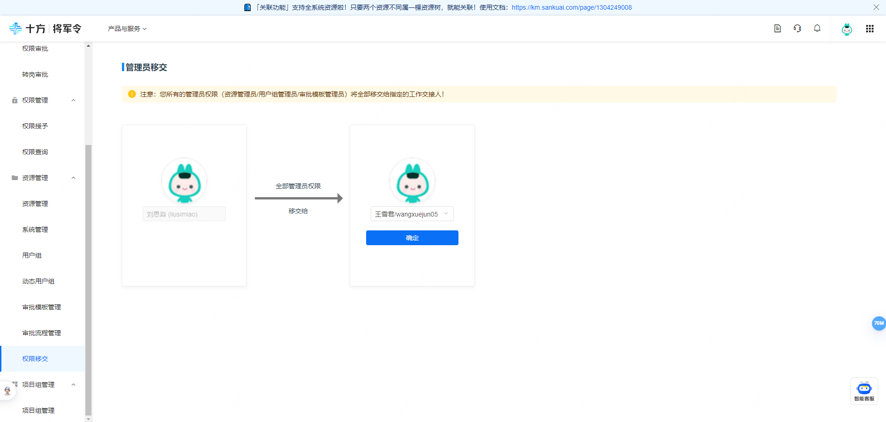

说明：权限管理
本文档面向使用Zeus的策略、算法等用户。其余超管新增、空间增删等操作内部产研测同学可参考:学城文档 2256113622（无权限读取标题）。
一、权限管理能解决什么问题
使用Zeus时您可能遇到以下问题:
- 如何申请Zeus权限?
- 如何成为空间管理员?
- 我是空间管理员，如何给新成员配置权限？
- 如何管理策略资产？
本篇指南将描述 Zeus自助申请与审批流程\批量授权流程\策略资产负责人设定与交接流程 解决上述问题。如有更多问题可联系PM@王铭嫣(Mingyan Wang)RD@谢鹏飞。
二、用户操作链路

三、具体操作步骤
3.1 如何申请Zeus空间权限
【我没有使用Zeus】 |
【我有某个Zeus空间权限，需要其他空间权限】 |
|---|---|
|
|


3.2 管理员如何主动批量授权空间权限
|
步骤 |
|---|
|
3.3 如何成为某一空间管理员
|
步骤 |
|---|
|
Q：为什么空间管理员不能有自助申请和审批流程？ A：当前将军令无法支持该种模式，待将军令支持后我们将上线支持。
|
3.4 如何主动发起策略资产批量转移
|
步骤 |
|---|
|
Q：Zeus有什么策略资产需要我管理？ A：目前Zeus场景资源负责人关联将军令系统，可用于成本管理及线上问题跟踪，后续如有诉求可进一步考虑基于负责人配置场景策略的权限限制。后续将逐步对于Zeus平台上如规则、模板、日志看板等资产进行关联负责人管理。
 |
3.5 我离职了，权限/资产将如何处置
|
用户提交离职申请 |
直属上级通过HR系统离职申请 |
|
|---|---|---|
|
空间普通成员权限 |
|
|
|
空间管理员权限/资产 |
|
|

四、Q&A
Q：为什么将军令系统无法查到我的账号信息，无法进行权限申请或被授予操作
A：请申请同学确认是否为当天入职同学。将军令员工信息查询时效为T+1，入职第二天再次进行申请即可。如第二天仍无法解决，请提TT工单解决
Q：申请弹窗中仅展示空间ID，看不到对应空间中文名称很不方便，能否展示空间ID-中文名？
A：由于将军令资源命名限制，无法展示中文名称权限资源，该问题已向将军令同学反馈，优化后将上线支持。当前可通过Zeus导航栏下拉列表查询全量Zeus空间ID与中文名关系。
Q：为什么空间管理员不能有自助申请和审批流程？
A：当前将军令无法支持该种模式，待将军令支持后我们将上线支持。
Q：我可以管理什么策略资产？
A：目前Zeus场景资源负责人关联将军令系统，可用于成本管理及线上问题跟踪，后续如有诉求可进一步考虑基于负责人配置场景策略的权限限制。后续将逐步对于Zeus平台上如规则、模板、日志看板等资产进行关联负责人管理。
Q：是否支持资产部分交接？
A：将军令当前暂不支持此类交接，待将军令支持后我们将上线支持。